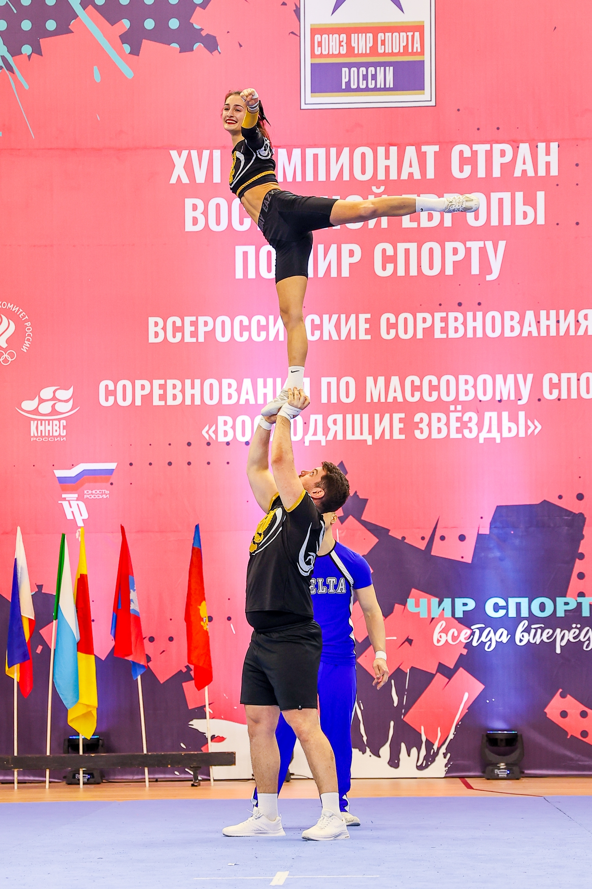

Нет единой базы
В СНГ нет структурированного источника по правилам и технике элементов.
Техника различных элеметов чир-спорта: станты, пирамиды, баскеты и т.п — с разбором по ролям, видео и правилами безопасности.

Знания есть — но они разбросаны по роликам, чатам и сложным регламентам.
В СНГ нет структурированного источника по правилам и технике элементов.
Материалы разбросаны по соцсетям, роликам и тяжёлым PDF-документам.
Ошибки в биомеханике стантов и пирамид из-за отсутствия наглядных пособий.
Спортсменам нужна техника «своей» роли, тренерам — быстрый подбор элементов.
CheerWiki — структурированный каталог элементов с фильтрами по уровню и категории, видеодемонстрациями и разбором техники для каждой роли: флайер, база.
Всё, что нужно спортсмену и тренеру — в одном месте.
Level 1–6, станты, пирамиды, баскеты. Поиск по названию, тегам и категориям.
Отдельные вкладки для флайера и базы — каждый видит свою часть техники.
Короткие ролики выполнения элемента и правил безопасности.
Обязательный блок с техникой безопасности для каждого элемента.
Возможность добавить страничку для ещё не описанного элемента.
Адаптивный интерфейс для использования прямо на тренировке.
Превью основных экранов продукта.
Главная — каталог с фильтрами
Карточка элемента — вики-страница
| Критерий | Соцсети | PDF-регламенты | CheerWiki |
|---|---|---|---|
| Структура | Низкая (лента, хаос) | Формальная | Высокая |
| Разбор техники | Видео без деталей | Нет визуализаций | Видео + фото + роли |
| Поиск | Отсутствует | По 100+ страниц | Быстрый поиск, фильтры |
Оставьте e-mail — сообщим о запуске MVP первыми.